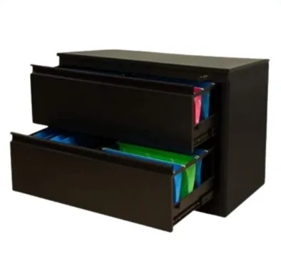
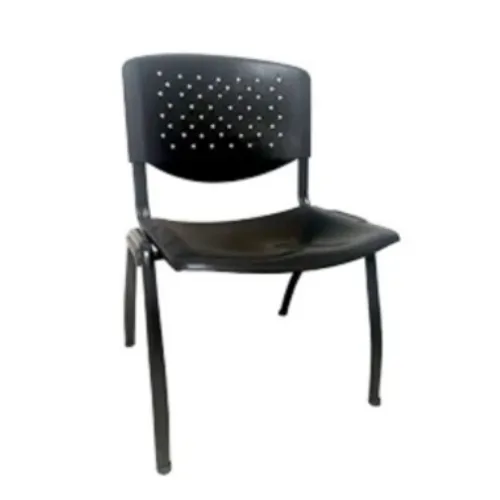
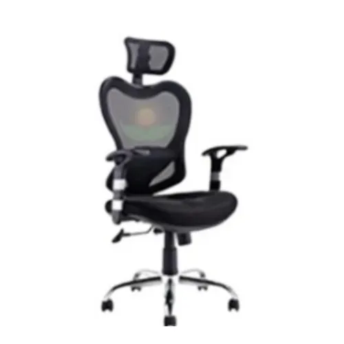

01
Referencia de catálogo
Archivo lateral de 2 gavetas
Archivo metálico lateral; confirmar dimensiones y unidad con JKS.

Imagen publicada por JKS Mobiliario para OficinaAsientos, archivos y mobiliario de JKS. Organiza cantidades por área antes de pedir una cotización.
Guarda tus referencias en una lista local y prepara el siguiente paso. Precios, variantes y existencias se revisan en cada ficha oficial.
Archivo metálico lateral; confirmar dimensiones y unidad con JKS.

Silla de espera con asiento y respaldo de polipropileno, base metálica.

Silla ejecutiva con brazos, respaldo de malla y altura de asiento regulable.
Fabricante de sillas, escritorios, archivos, lockers y estanterías; catálogo con precios y solicitud de cotización por productos.
Prueba cantidades y condiciones. Obtén un resumen local para revisar antes de hablar con la empresa.
Datos revisados el 3 de noviembre de 2026. La empresa confirma cualquier condición vigente.
Archivo metálico lateral; confirmar dimensiones y unidad con JKS.
Silla de espera con asiento y respaldo de polipropileno, base metálica.
Silla ejecutiva con brazos, respaldo de malla y altura de asiento regulable.
La empresa publica una planta en Mixco, Guatemala.
El sitio pide referencias, cantidades y ubicación de entrega para confirmar condiciones.
Su FAQ anuncia entrega e instalación coordinada; costo según ubicación y volumen.
La FAQ indica que emiten factura y solicitan datos de facturación al cotizar.
La página indica atención a compras corporativas e institucionales; el proceso se consulta al equipo.